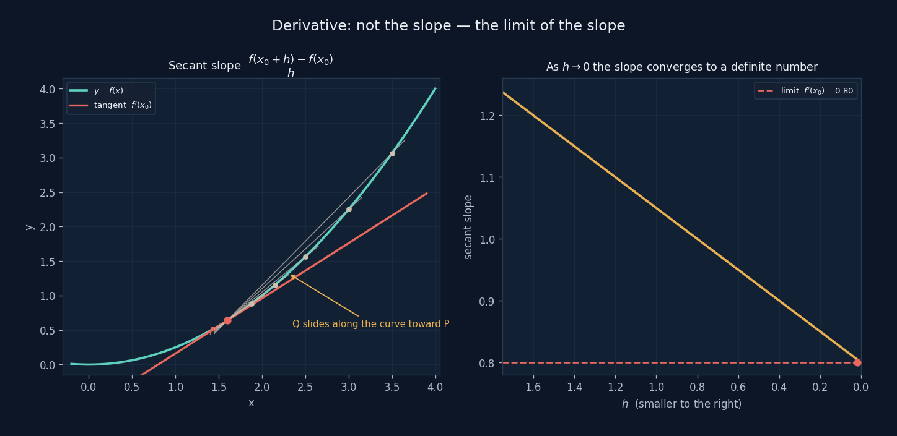
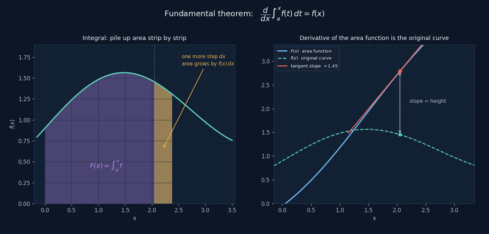

Change & Gradients
The derivative is the limit of a slope, the differential is the best straight-line
approximation, the integral adds change back up.
Three questions that turn out to be one.
First, three words to keep straight
Derivative, differential, integral get taught in school as three sets of rules to memorise. But each one is really answering a very specific question:
Derivative: how fast is it changing right now? → a number, the slope of the tangent
Differential: step forward a little — roughly how much does it change? → an approximation, $dy=f'(x)\,dx$
Integral: add up all these changes — what's the total? → an area
Their relationship: the derivative breaks a function down into its instantaneous rate of change; the integral puts the instantaneous rates back together. The differential is the bridge between them — it translates "rate of change" into "how much actually changed."
Derivative: not a slope, the limit of a slope

Take a point $P$ on a curve, then another point $Q$ nearby — the slope of the line through them is easy, that's just a secant line, arithmetic from middle school.
The problem is "the slope right at this instant." When $Q$ merges with $P$, you get $\frac{0}{0}$, which means nothing. So the derivative doesn't ask for that value directly — it asks: as $Q$ slides toward $P$, does the secant's slope converge to some definite number?
The right-hand plot is exactly this limiting process: the x-axis is $h$, getting smaller to the right, the y-axis is the corresponding secant slope. $h$ hasn't reached zero yet, but the slope is already homing in on $0.80$. The derivative is "where it's heading," not "where it landed."
Differential: the best straight line
Once you know the slope, you can use it to approximate. Near $x_0$, replace the curve with its tangent line:
That small red step in the demo is exactly this: walk $dx$ sideways, rise $dy$. Drag $dx$ larger and you'll see the tip of the step pull away from the curve; drag it smaller and the two hug each other.
Why it deserves its own name
Because almost every practical calculation leans on it. Error propagation, Newton's method, every step of optimisation, every update in neural network backpropagation — all of them are "at the current point, replace the curve with a line, take one small step." The differential is the licence to treat a nonlinear problem as linear, temporarily.
Integration and the fundamental theorem

Integration adds up infinitely many pieces of "$f(x)\cdot dx$." Those violet bars in the demo are exactly these pieces — turn the slice count $n$ up, the bars get thinner, and their sum gets closer to the true area under the curve.
The key step is on the right. Treat "the area from $a$ to $x$" as a new function $F(x)$, and ask what its derivative is — nudge $x$ forward by $dx$, and the area gains a thin strip, height $f(x)$, width $dx$. So
This is the fundamental theorem of calculus: the derivative of the area function is exactly the original curve. Integration and differentiation are inverse operations of each other — this one sentence turns "compute an area," a genuinely hard problem, into "find a function whose derivative is $f$," a comparatively tractable one.
Four ideas
Limit
- What it is
- Not "where did it land," but "where is it heading."
- Why it has to exist
- Because "the speed right now" is itself a kind of paradox: at any single instant, an object hasn't moved at all. The limit sidesteps the paradox — it doesn't look at that one point, it looks at the process of approaching it.
- Where it sits
- Derivatives, integrals, continuity, series — all of calculus rests on this.
- When it doesn't exist
- The function isn't differentiable there. At a sharp corner, for instance, the secant slopes from the left and right converge to two different numbers.
Derivative
- What it is
- $f'(x)$, the limit of the secant slope as $h\to0$.
- What it measures
- How fast something is changing. The derivative of position is velocity, the derivative of velocity is acceleration.
- Where it sits
- For a multivariable function, every direction has its own derivative, and they're packaged together into the gradient. The gradient points the direction of steepest ascent, so "walk along the negative gradient" is going downhill — the starting point of every optimisation algorithm.
- When it's zero
- A horizontal tangent: a maximum, a minimum, or an inflection point. Least squares is solved by exactly this — "set the derivative to zero."
Chain Rule
- What it is
- $\dfrac{dz}{dx}=\dfrac{dz}{dy}\cdot\dfrac{dy}{dx}$ — derivatives multiply through nested layers.
- What it measures
- How an influence propagates down a chain. Move $x$ a little, $y$ follows, $z$ follows $y$ — the total effect is the product of each layer's amplification factor.
- Where it sits
- It's the entirety of backpropagation. A network with dozens of layers, asking how much some weight influences the final error, is just running this chain from back to front.
- When one link is zero
- The whole chain breaks, the gradient can't get back through — this is vanishing gradients in deep networks.
Integral
- What it is
- $\int_a^b f(x)\,dx$, the limit of summing infinitely many $f\cdot dx$ pieces.
- What it measures
- An accumulated quantity. Integrate velocity, get distance; integrate power, get energy; integrate a probability density, get a probability.
- Where it sits
- Inverse of differentiation (the fundamental theorem). Multiple integrals give volume; surface integrals give flux — the electric flux $\Phi=\mathbf E\cdot\mathbf A$ from the vectors page is exactly a surface integral simplified for a uniform field.
- When there's no closed form
- The overwhelming majority of integrals have no elementary antiderivative. That's when you turn to numerical integration — essentially those same bars in the demo, just cut finer and weighted more cleverly.
Where it shows up elsewhere on this site
The S-curve: four of six conditions are derivative conditions
The smooth start-up curve $s(t)=6t^5-15t^4+10t^3$ has six boundary conditions;
$s'(0)=s'(1)=0$ governs starting and stopping speed, $s''(0)=s''(1)=0$ governs starting
and stopping acceleration. Without the concept of a derivative, "smooth" is just a
feeling — you can't turn it into an equation.
See → Build · That First Twitch
Least squares: setting the derivative to zero
The residual sum of squares $S(\mathbf c)=\lVert A\mathbf c-\mathbf b\rVert^2$ is a
bowl opening upward, and the bottom of the bowl is the optimal solution. Finding that
bottom is exactly "take the partial derivative with respect to each coefficient, set
it to zero" — one of the three routes to the normal equations.
See → Fitting & Least Squares
Neural networks: the chain rule, run tens of thousands of times
The servo calibration data took a small network thirty thousand epochs of gradient
descent to catch up with what least squares solved in one step. The core action every
single epoch is using the chain rule to divide up the blame for the error across every
weight.
See → Neural Networks
Extension: convolution — what an integral looks like in engineering
The integral above adds up $f(x)\,dx$. Change what's being summed and you get one of the most heavily used integrals in engineering:
convolution
It's saying something quite plain
Knock once, and a system rings for a while — that ringing is called the
impulse response $h(t)$.
Any input can be seen as countless individual knocks of varying strength, each
producing its own echo, staggered in time and overlapping.
Adding those echoes up is convolution.
The integral sign here is doing exactly that job: "add up infinitely many of them."
A speaker's reverb, a camera lens's blur, multipath fading in communications — all the same equation underneath. The explorer below breaks it into seven panels: send in one sharpest-possible pulse and watch the channel tear it apart into several, round each into a "haystack," and ask whether an inverse function can bend the haystack back into the original spike.
Three things worth remembering, so they don't get flipped around: the impulse function is the probe, not the haystack; which path arrives first is read off panel ②'s left-right axis, not panel ⑤'s phase angle; a successful equaliser doesn't mean the channel changed — what changed is that you multiplied by a $G$.
Friendship code, please
请输入友情码
Hint: who said the line on the front page? His surname will do.
线索：首页那句话是谁说的？填他的姓。
Not quite — try again